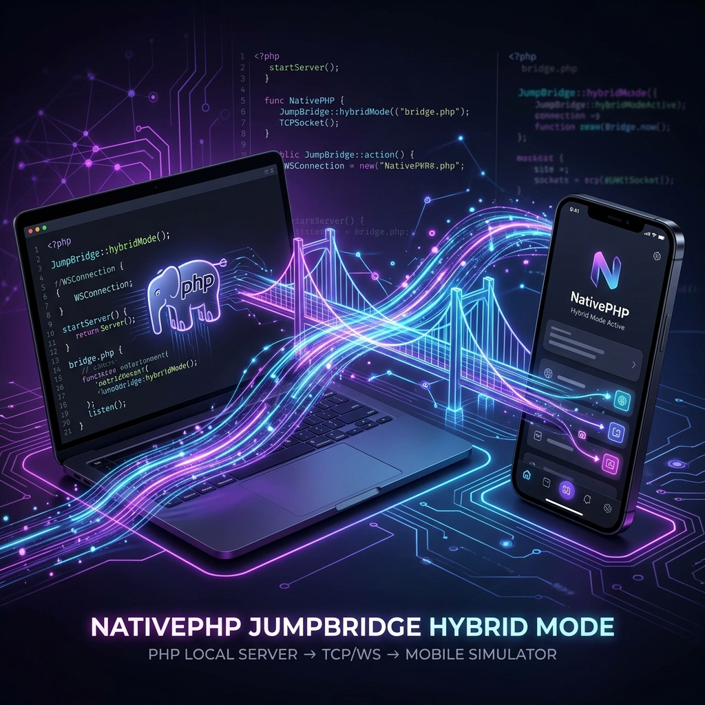

Uncovering NativePHP's Hidden Gem: The "JumpBridge" Hybrid Mode


Explore with AI
Want a quick summary or have specific questions about this post? Use your favorite AI agent.
NativePHP has been making waves by taking PHP out of the browser and putting it onto the desktop. But with the recent introduction of NativePHP Mobile, a massive new challenge emerged: the mobile compilation cycle.
If you've ever built a mobile app, you know the pain. Tweak a UI component, recompile the app, wait for the iOS Simulator or Android Emulator to boot, and navigate back to your screen just to see if your padding was correct. It’s agonizing.
But deep within the nativephp/mobile-air codebase lies a hidden gem—a fascinating architectural mechanism designed to solve this exact problem. It's called Jump Hybrid Mode, and it completely rethinks how PHP communicates with a mobile device during development.
The Problem with Native Execution
When a NativePHP app runs in production on a mobile device, a compiled PHP binary runs directly on the phone. To allow PHP to talk to the device's native APIs (like the camera, secure storage, or haptics), NativePHP uses a custom C extension. This extension exposes functions like nativephp_call() to bridge the gap between PHP and native Swift/Kotlin code.
But during development, copying your entire Laravel app over to a simulator and recompiling the native shell every time you change a Blade view would kill developer velocity.
To get around this, the NativePHP team built the JumpBridge.
Enter the JumpBridge
If I look inside src/JumpBridge.php and src/jump_bridge_functions.php in the mobile-air codebase, I can see exactly how they bypassed the compilation cycle.
In "Jump" mode, PHP doesn't run on your mobile device at all. Instead, your Laravel application runs locally on your development machine (just like a normal web app), while the native UI shell runs on the simulator.
But if PHP is running on your Mac, and the native APIs are running on the iPhone Simulator, how does PHP trigger a native device feature?
The Pure-PHP Polyfill
The magic starts in jump_bridge_functions.php. If the NativePHP C extension isn't loaded (which is the case on your local machine), NativePHP injects a pure-PHP fallback implementation of the core bridge functions:
if (! function_exists('nativephp_call')) {
function nativephp_call(string $method, string $params = '{}'): ?string
{
return JumpBridge::instance()->call($method, $params);
}
}Instead of executing C code, this fallback routes all native requests through the JumpBridge class.
The TCP Socket Relay
Inside JumpBridge.php, I find that the framework establishes a persistent TCP socket connection to a local bridge server (usually running on port 3001 or 3002).
// Inside JumpBridge::call()
$message = json_encode([
'type' => 'bridge_call',
'id' => $requestId,
'method' => $method,
'params' => json_decode($paramsJson, true) ?? [],
]);
// Send length-prefixed message over TCP
$packed = pack('N', strlen($message)).$message;
fwrite($this->socket, $packed);
// Wait for the device's response
$response = $this->readResponse();Here is the full lifecycle of a native call in Jump Mode:
- Your Laravel controller calls
Camera::getPhoto(). - The
JumpBridgeintercepts this call, wraps it in JSON, and fires it over a TCP socket to a local WebSocket relay server. - The relay server instantly forwards that JSON over a WebSocket to the mobile simulator.
- The simulator reads the JSON, executes the native Swift/Kotlin camera code, and sends the result back through the WebSocket.
- The relay server pushes the result back through the TCP socket.
- The
JumpBridgedecodes the result and hands it back to your PHP script synchronously.
Solving the TCP Stream Problem: Length-Prefixed Framing
One of the notorious challenges of raw TCP sockets is that they are streams, not discrete messages. If the device sends a massive JSON payload (like a base64 encoded photo), the TCP stream might break it into multiple packets.
How does JumpBridge know when the JSON message ends?
By implementing a classic 4-byte big-endian length-prefixed framing protocol. Before sending any JSON, the bridge prepends a 32-bit integer (pack('N', ...)) representing the exact byte length of the payload:
// Sending data
$message = json_encode([...]);
$packed = pack('N', strlen($message)) . $message;
fwrite($this->socket, $packed);When receiving data, it reads exactly 4 bytes first, unpacks them to find the payload size, and then loops on fread until it receives that exact number of bytes:
// Reading data
$lengthData = $this->readExact(4);
$unpacked = unpack('N', $lengthData);
$length = $unpacked[1];
// Read exactly $length bytes to construct the full JSON
return $this->readExact($length);This ensures that even over a flaky local network connection, the PHP script and the mobile device never truncate or mangle the JSON payloads.
The Hot-Reloading Magic
Because the PHP process stays entirely resident on your local machine, NativePHP achieves an incredibly fast hot-reloading experience.
If I look at nativephp_element_wait_event() in the bridge file, I can see how NativePHP forces a re-render when you save a file. The device monitors for changes and sends back an event type of 15 (EVENT_HOT_RELOAD).
if (($decoded['type'] ?? -1) === 15) { // EVENT_HOT_RELOAD
// ... debounce logic ...
$compiledDir = storage_path('framework/views');
if (is_dir($compiledDir)) {
foreach (glob("{$compiledDir}/*.php") as $file) {
@unlink($file);
}
}
clearstatcache(true);
return null; // loop continues → render() picks up fresh views
}When you hit save in your editor, the bridge simply deletes the compiled Blade views (storage/framework/views/*.php) and tells the long-running PHP process to loop again. No restarting PHP. No recompiling Swift. No rebuilding the app. It just dynamically flushes the cache and re-renders the new UI instantly.
The Ingenious Hot-Reload Debouncer
There’s one subtle issue with file watchers: hitting Cmd+S or Ctrl+S often triggers multiple filesystem events in rapid succession (e.g., an OS might fire a "modify" and "change" event within milliseconds). If the device forwarded every single event, the PHP application would furiously delete and re-compile Blade views multiple times per second, causing lag or race conditions.
To prevent this, nativephp_element_wait_event employs a clever static debounce timer directly inside the function:
static $lastHotReload = 0;
$now = time();
// Debounce: ignore rapid-fire hot reload events (within 2 seconds)
if ($now - $lastHotReload < 2) {
return null;
}
$lastHotReload = $now;Because PHP processes in NativePHP Mobile use a long-running execution loop (similar to Laravel Octane), static variables maintain their state across loop iterations. By utilizing static $lastHotReload, the bridge simply ignores any subsequent hot reload events that happen within two seconds of the first one.
Conclusion
The JumpBridge is a brilliant piece of engineering. By decoupling the PHP execution environment from the native mobile shell during development, NativePHP allows developers to maintain the rapid, sub-second feedback loop of web development while still building true, native mobile applications.
It’s hidden mechanisms like these that make NativePHP such a powerful tool for modern PHP developers looking to conquer the mobile frontier.